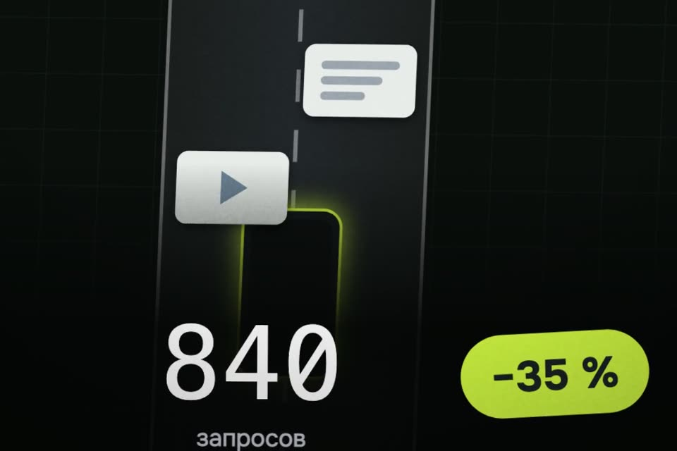

Меньше рекламы на телефоне
Телефон перед каждой загрузкой спрашивает, где находится адрес. Обычно у провайдера. Мы переключаем его на бесплатный фильтр AdGuard DNS: адресов рекламы и трекеров он «не знает», и баннеры не грузятся.
- бесплатно
- без приложений
- выключается одной галочкой
К ролику «Claude убрал рекламу у меня в интернете» · обновлено 27 октября 2026
Ничего ставить не надо. Реклама внутри YouTube и Instagram останется: она приходит с тех же адресов, что и сами видео.
Один шаг для своего телефона
Айфон или андроид, выберите свой.

Айфон: поставьте файл-профиль
Внутри только адрес DNS-сервера AdGuard.
- Откройте эту страницу в Safari на айфоне и нажмите кнопку выше. Если появилось «Профиль загружен», идите к пункту 2. Если файл просто скачался, откройте приложение «Файлы» → Загрузки → нажмите на файл.
- Откройте Настройки → Основные → VPN и управление устройством.
- Нажмите «Без рекламы: AdGuard DNS» → Установить → введите код телефона → Установить.
- Там же, в разделе DNS, должно быть выбрано «AdGuard DNS (без рекламы)». Если стоит «Автоматически», выберите его.
Айфон напишет «Не подписан». Это нормально: внутри только адрес DNS-сервера AdGuard, больше ничего. Содержимое файла открыто, его можно посмотреть в репозитории.
В VPN и управление устройством стоит профиль «Без рекламы: AdGuard DNS», в разделе DNS выбрано «AdGuard DNS (без рекламы)».
Выключить: Настройки → Основные → VPN и управление устройством → профиль → Удалить профиль. Всё вернётся как было.
Андроид: впишите частный DNS
Без файлов, одна строка.
- Настройки → Подключения (Samsung) или Настройки → Сеть и интернет (остальные) → Частный DNS (бывает в «Дополнительно»).
- Выберите «Имя хоста провайдера частного DNS» и впишите:
dns.adguard-dns.com - Сохраните.
В «Частном DNS» выбрано имя хоста dns.adguard-dns.com.
Выключить: там же выбрать «Автоматически» или «Отключено».
Если застряли
Хочу выключить фильтр
- Айфон: Настройки → Основные → VPN и управление устройством → профиль → Удалить профиль. Всё вернётся как было.
- Андроид: в «Частном DNS» выбрать «Автоматически» или «Отключено».
Айфон просто скачал файл
Откройте страницу именно в Safari. Если файл всё равно просто скачался, откройте приложение «Файлы» → Загрузки → нажмите на файл, дальше как в шаге.
Айфон пишет «Не подписан»
Это нормально: внутри только адрес DNS-сервера AdGuard, больше ничего. Содержимое файла открыто, его можно посмотреть в репозитории.
Профиль стоит, а реклама как была
Проверьте, что в разделе DNS выбрано «AdGuard DNS (без рекламы)», а не «Автоматически». Пока включён VPN или «Частный узел iCloud», профиль может не действовать. Реклама внутри YouTube и Instagram останется в любом случае.
Не открывается ссылка из рассылки или кешбэк
Иногда фильтр ломает ссылку из рекламной рассылки или кешбэк-сервиса. Выключили, перешли, включили обратно.
Что не уйдёт
- Реклама внутри YouTube и Instagram останется: она приходит с тех же адресов, что и сами видео.
- Мы замерили сами на пяти новостных сайтах: запросов стало на треть меньше, а вес страниц почти не изменился.
- Иногда фильтр ломает ссылку из рекламной рассылки или кешбэк-сервиса. Выключили, перешли, включили обратно.
- Пока включён VPN или «Частный узел iCloud», профиль может не действовать.
Сервис: бесплатный публичный AdGuard DNS, adguard-dns.io. Мы с AdGuard не связаны.